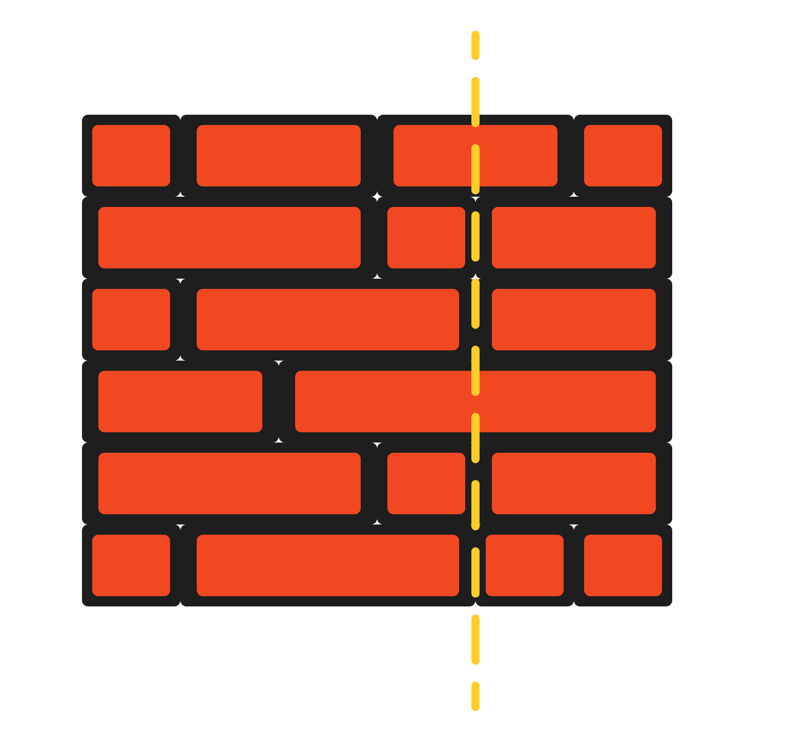

554. 砖墙
哈希统计「除两端外」每个缝位置出现在多少行里，缝最多的位置穿砖最少，答案 = 行数 − 最大计数。
思路
- 穿线不穿砖 ⇔ 线落在砖缝上：把每行砖宽累加，得到的每个前缀和就是一个缝位置。
- 只统计除最后一块砖外的前缀和（墙右缘不能画线）；
Map<Long,Integer> gapCount数每个缝位置出现在几行里。 - 边累加边
merge(x, 1, Integer::sum)，顺手更新最大值best。 - 答案 =
wall.size() - best：那条线在best行落在缝上，剩下的行都被穿过；一行缝都没有时best=0，答案就是行数。 - 缝位置用
long：砖宽可达 2^31−1，两块相加就溢出 int。
图解
最优解
1import java.util.*;2 3class Solution {4 public int leastBricks(List<List<Integer>> wall) {5 // gapCount：缝位置 x → 有多少行在这里有缝（x 用 long 累加，防砖宽极大时溢出）6 Map<Long, Integer> gapCount = new HashMap<>();7 int best = 0;8 for (List<Integer> row : wall) {9 long x = 0;10 // 只数除最后一块砖外的砖缝：墙的右缘不能画线11 for (int i = 0; i < row.size() - 1; i++) {12 x += row.get(i);13 best = Math.max(best, gapCount.merge(x, 1, Integer::sum));14 }15 }16 // 穿过的砖块数 = 行数 − 这条线上有缝的行数，取缝最多的位置17 return wall.size() - best;18 }19}题目
你的面前有一堵矩形的、由 n 行砖块组成的砖墙。这些砖块高度相同（也就是一个单位高）但是宽度不同。每一行砖块的宽度之和相等。
你现在要画一条 自顶向下 的、穿过 最少 砖块的垂线。如果你画的线只是从砖块的边缘经过，就不算穿过这块砖。你不能沿着墙的两个垂直边缘之一画线，这样显然是没有穿过一块砖的。
给你一个二维数组 wall ，该数组包含这堵墙的相关信息。其中，wall[i] 是一个代表从左至右每块砖的宽度的数组。你需要找出怎样画才能使这条线 穿过的砖块数量最少 ，并且返回 穿过的砖块数量 。
示例 1：

输入：wall = [[1,2,2,1],[3,1,2],[1,3,2],[2,4],[3,1,2],[1,3,1,1]] 输出：2
示例 2：
输入：wall = [[1],[1],[1]] 输出：3
提示：
n == wall.length1 <= n <= 1041 <= wall[i].length <= 1041 <= sum(wall[i].length) <= 2 * 104- 对于每一行
i，sum(wall[i])是相同的 1 <= wall[i][j] <= 231 - 1
题面取自力扣当前版本。
数据快照 2026-11-04。题面版权归力扣所有，本站点仅供本人学习使用，请勿对外发布。